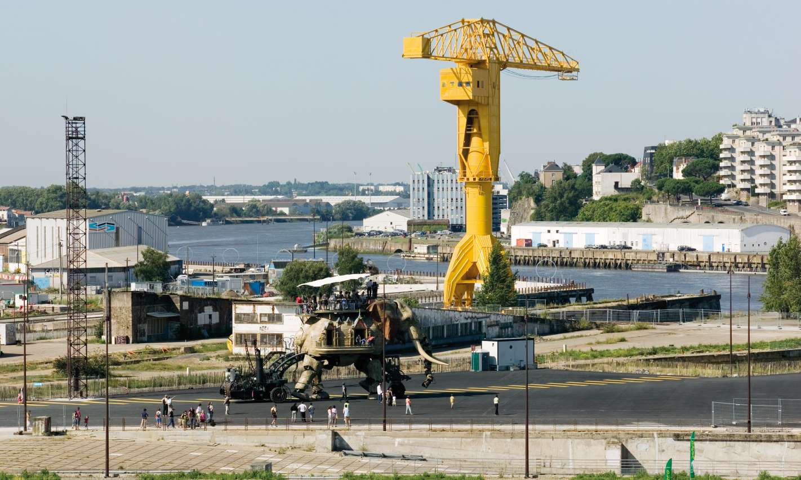

Survolez l'image et agrandissez/réduisez la vue à l'aide de la molette.
Budget: 24 700 000 € HT
Surface totale, Surface amménagée: 200 000 m², 134 000 m2 (Parc des chantiers) 36 000 m2 (Quai des Antilles)
Date début: 2005
Date fin: 2009
Maîtrise d'ouvrage: Nantes Métropole
Co-traitant(s): bureau des paysages
Description:
L’objectif principal du projet est d’accueillir les fonctions d’une nouvelle centralité qui soit à la fois reliée à
la ville historique, qui prenne en compte sa dimension métropolitaine, mais qui profite aussi de la Loire qui
l’entoure. Le dispositif des estacades prolonge et complète les promenades de bords de Loire initiées le long
du quai François Mitterrand et qui se développera sur l’ensemble du périmètre de l’île. À l’instar du ponton
d’accostage pour les navettes fluviales et les bateaux particuliers, c’est un moyen de créer des espaces
publics en contact direct avec le fleuve. Dans la continuation avec la tradition d’importation d’essences rares
et exotiques par les voies maritimes, le parc est caractérisé par une riche variété de végétation endogène
et exogène. La mémoire de ce site de fabrication perdure dans les nouvelles activités installées dans les
anciens ouvrages du chantier naval.
Ainsi, les cales deviennent des locaux pour différentes associations et
les nefs accueillent des nouveaux programmes de création et d’animation artistique et culturelle. Le parc tout
entier héberge la biennale d’art contemporain “Estuaire” dont les Anneaux de Daniel Buren. Les thématiques
d’aménagement du site des chantiers font écho aux principes adoptés pour l’aménagement de l’île : se servir
de l’existant, utiliser l’histoire du site pour imaginer sa transformation, considérer le lieu comme un berceau
de ressources et privilégier une certaine mesure dans les interventions.
{kind=link}
{kind=link}
{kind=link}
{kind=link}